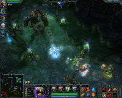
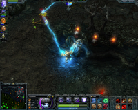
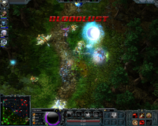

Heroes of Newerth
Dieser Artikel wurde für die folgenden Ubuntu-Versionen getestet:
Dieser Artikel ist mit keiner aktuell unterstützten Ubuntu-Version getestet! Bitte diesen Artikel testen und das getestet-Tag entsprechend anpassen.
Zum Verständnis dieses Artikels sind folgende Seiten hilfreich:
Heroes of Newerth  ist ein kommerzielles Online-Strategiespiel von S2Games, das nativ unter Linux läuft und als inoffizieller Nachfolger der Warcraft III-Modifikation DOTA (Defense of the Ancients) angesehen wird. Im Vergleich zu DOTA bieten sich folgende Neuerungen:
ist ein kommerzielles Online-Strategiespiel von S2Games, das nativ unter Linux läuft und als inoffizieller Nachfolger der Warcraft III-Modifikation DOTA (Defense of the Ancients) angesehen wird. Im Vergleich zu DOTA bieten sich folgende Neuerungen:
Automatisches Matchmaking
Spielerstatistiken
Schutz gegen Leaver
Zeitgemäße Grafik
Bei Netzwerkproblemen besteht die Möglichkeit zur Neuverbindung
Eingebauter Voice-Chat
Neue Helden
Replays können jederzeit heruntergeladen werden
|  |
|  |
|  |
Installation¶
Nachdem der Linux-Client von der offiziellen Homepage  heruntergeladen wurde, müssen der Datei zuerst Ausführrechte gegeben werden [2]. Jetzt kann die Installation durch Doppelklick auf die Datei gestartet werden. Sollte dies nicht klappen, ändert man die Dateiendung in zip, entpackt die Datei, und führt die Datei hon.sh im Verzeichnis data aus.
heruntergeladen wurde, müssen der Datei zuerst Ausführrechte gegeben werden [2]. Jetzt kann die Installation durch Doppelklick auf die Datei gestartet werden. Sollte dies nicht klappen, ändert man die Dateiendung in zip, entpackt die Datei, und führt die Datei hon.sh im Verzeichnis data aus.
Nach Abschluss der Installation kann HoN über den Menüeintrag, zu finden unter "Anwendungen -> Spiele", gestartet werden.
Mehrbenutzersystem¶
Falls mehrere Benutzer auf dem System HoN spielen möchten, lässt sich dies auch einrichten. Zunächst wird der Menüeintrag aus dem Benutzerordner in den systemweiten Ordner verschoben, und zwar über das Terminal [1] [3]:
sudo mv $HOME/.local/share/applications/s2games_com-HoN_1.desktop /usr/share/applications
Zusätzlich sollte jedem Benutzer Schreibrechte auf das Installationsverzeichnis gegeben werden [2], damit das Spiel Aktualisierungen ("Patches") herunterladen kann. Dazu benutzt man diesen Befehl [1] [3]:
sudo chmod 777 -R <Installationsverzeichnis>

Infobox¶
| Heroes of Newerth | |
| Genre: | Strategie |
| Sprache: | ,  (unvollständig) (unvollständig) |
| Veröffentlichung: | 12.05.2010 |
| Systemvoraussetzungen: | 2.2GHz Pentium 4 / AMD 2400+ oder schnellerer Prozessor, mind. 1.5 GB RAM, 3D-beschleunigte OpenGL-Grafikkarte mit mind. 128 MB Speicher |
| Medien: | Download |
| Läuft mit: | nativ |
- Erstellt mit Inyoka
-
 2004 – 2017 ubuntuusers.de • Einige Rechte vorbehalten
2004 – 2017 ubuntuusers.de • Einige Rechte vorbehalten
Lizenz • Kontakt • Datenschutz • Impressum • Serverstatus -
Serverhousing gespendet von